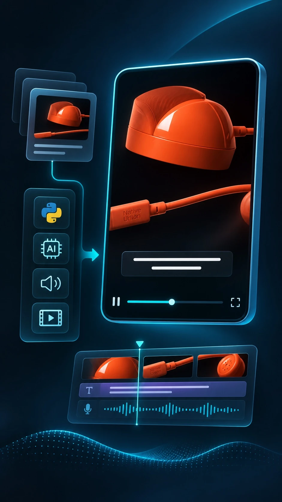

Building software.Making things work.
Python, C++, web and Linux. A closer look at my applications, coursework and technical experiments — with documented results and clearly stated development stages.
FEATURED WORK
Projects, not just keywords.
Three starting points. Expand a card to inspect the implementation, then explore further if needed.

Python / Automation2026Automated Video ProductionPython application integrating local text generation, narration, composition and FFmpeg rendering. Public prototype output and separate test record.
Python · Qwen · TTS · FFmpegCollapse

Python application integrating local text generation, narration, composition and FFmpeg rendering. Public prototype output and separate test record.
 C++ / Game2022/23C++ Game Development — Dungeon Crawler
C++ / Game2022/23C++ Game Development — Dungeon CrawlerOriginal C++ group project with object-oriented mechanics; later browser-playable JavaScript adaptation.
C++ · OOP · JavaScriptCollapse
Original C++ group project with object-oriented mechanics; later browser-playable JavaScript adaptation.
 Web / Deployment2026Web Development & Deployment
Web / Deployment2026Web Development & DeploymentResponsive bilingual static website, GitHub Pages deployment and browser game integration.
HTML · CSS · JS · GitCollapse
Responsive bilingual static website, GitHub Pages deployment and browser game integration.
PROFILE & TECHNOLOGIES
Behind the work.
I study Business Information Systems (B.Sc.) at Technische Universität Braunschweig. My interests include software engineering, automation, applied AI and practical IT systems.
My experience ranges from university coursework and group development to independently implemented applications and hands-on Linux configuration. Each case study distinguishes verified results from planned features.
Programming & web
Python · C++ · Java · JavaScript · HTML · CSS
Data & Analysis
SQL (basics) · R · Jupyter Notebook
Development & Systems
Linux · Shell scripting · systemd · Git · GitHub
Libraries & Automation
Local LLMs (Qwen) · TTS (Kokoro) · FFmpeg · PySide6 · pygame